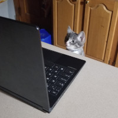

Cats can do many things:
glare at you
stick their tongue out

become a croissant

operate a computer
Cats are more than just a emotional support companion with a profound and deeply felt connection that will be there for you when everybody in your life dissapoints and abandons you—they’re also a nuisance.
― Albert Einstein, probably
Get a cat today!
To acquire your own stinky little feline, click the button!